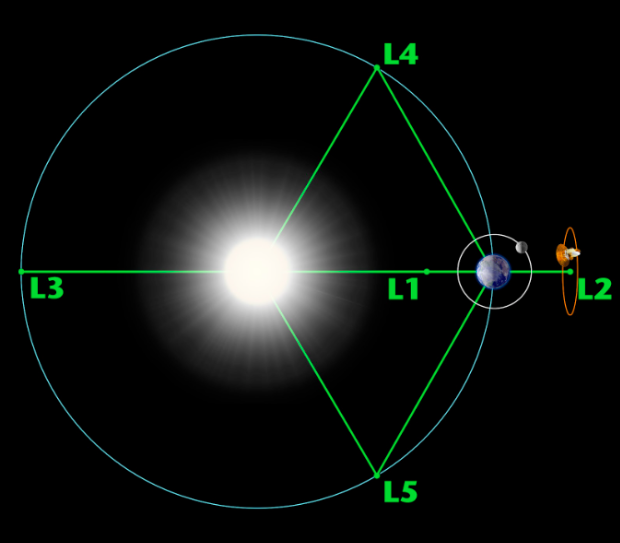
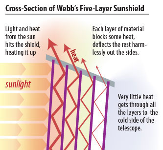
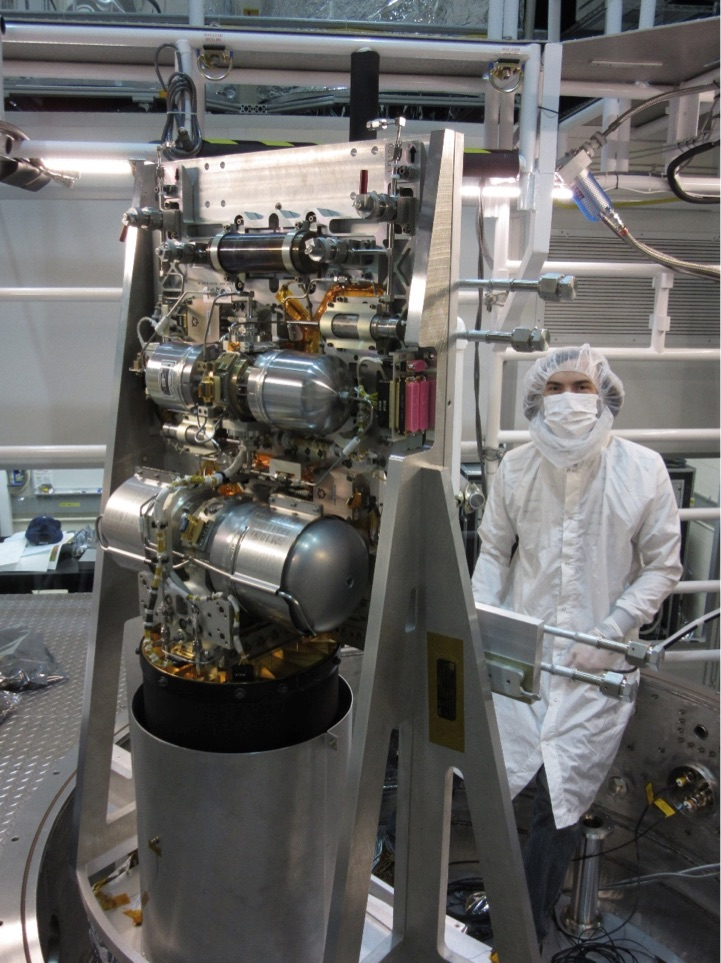
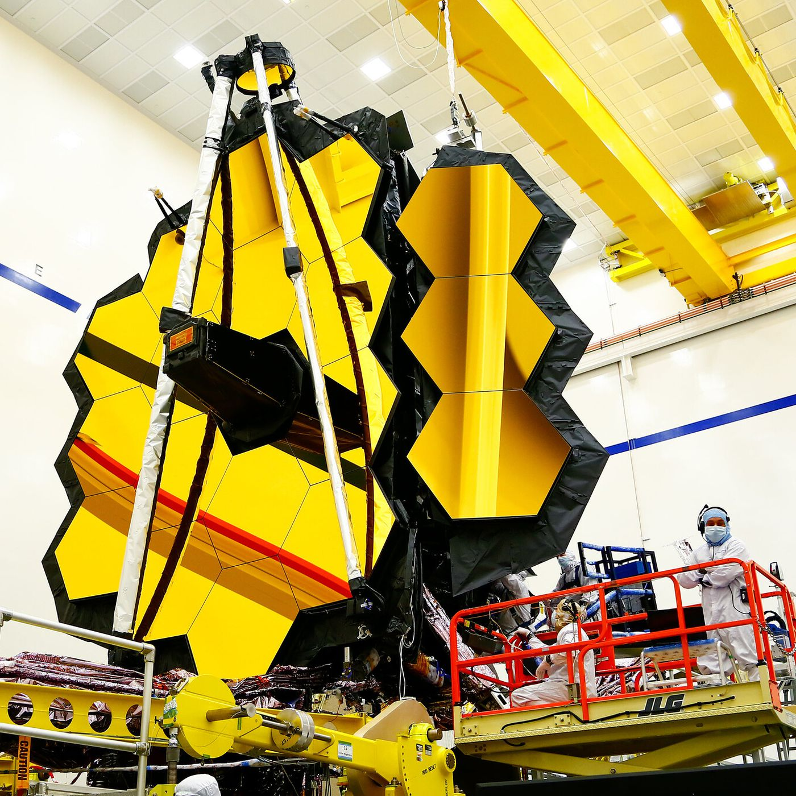

James Webb Space Telescope - The Extraordinary Engineering
The James Webb Space Telescope (JWST), a scientific and engineering wonder, was launched on the Ariadne 5 rocket on the French Guiana spaceport (located conveniently on the Earth’s equator) on the 25 of December, 2021. This marvel, worth $10,000,000,000, lets us take another leap in space exploration. In this article, I am to answer the two questions: what will it do and how does it work?
It’s mission:
The JWST is made to extend the job of the Hubble Space Telescope. It will detect infrared waves of the past (of 13.5 billion years ago), with a great range of wavelengths and high sensitivity. Here are a few things that this extraordinary telescope can do:
- It works as a “time machine”. When we look at a galaxy light years away, we are seeing what it was like many years ago. For example, the light of the Sun takes 8 mins to reach us, so what we see is the version of the Sun 8 mins ago. This also means that at light speed, the Sun is 8 mins away from Earth. It is similar for distant galaxies. If something is, let’s say, 10 million light years away from us, that means that what we are seeing is the version of that celestial object 10 million years ago. In a similar way, with this telescope, we are able to see extremely far back in time, about 13.5 billion years back.
- Detect life on other exoplanets
- See the birth and formation of stars through clouds of dust. Previously, we have faced trouble in seeing how stars are formed due to the immense amount of dust, but now, the JWST will be able to see this formation
- Study black holes
Every single part of this telescope (the launch vehicle, image processing, electromechanical systems, the cooling system, the mirror, and the sun shield) requires insane engineering. Here, I will discuss the most complex and intriguing parts of the spacecraft, namely: the sun shield, the cooling system, and the mirror. Let’s start with the sun shield.
The sun shield:
As big as a tennis court, this shield is required for two reasons:
- The telescope detects infrared radiation from 13.5 billion years ago (little after the universe came into existence), and because infrared radiation is heat, the heat from the sun can saturate/manipulate the detector readings. 
- For correct operation, most of the parts of the telescope need to work at a temperature of -233 degree Celsius, which makes it really important to keep the heat away from the telescope.
The Sun gives 200 kilowatts of power onto the shield, and for correct functioning of the telescope, the required amount is less than a watt. Therefore, the sun shield needs to be light, strong, resistant to solar radiation, stable in a range of temperatures, as well as reflective. To achieve this, the following materials and properties were used:
- Kapton, a high-performing plastic suits which all these conditions, is used. Every layer (of the total 5 layers of the sun shield) of this material is extremely thin. The first layer is 0.05 mm thick, being the thickest of all the layers. The other 4 layers are only 0.025 mm thick. Kapton is transparent, but because it can be easily coated with other materials, every layer is also coated with a 100-nanometer thick aluminum. This reflectiveness prevents heat transfer in the form of radiation.
- Due to the vaccuum gaps between each layer, no conduction can take place. Although radiation can pass through the vacuum layers, that won’t happen as the layers are shaped in such a way that the radiation is deflected back into space. Now, the only remaning form of heat transfer is convection, and that is not possible in space anyways (due to the lack of any fluid for propoagation).
- Layer 1 is coated with a special silicon that is 50 nanometers thick, due to the silicon's high emissivity (meaning that it releases a lot of its intake energy as thermal energy). This coating is also applied to Layer 2, as it is the second hottest layer of the sun shield. The layers get smaller as they reach closer to the main instruments, so that the mirror “only has a direct line of sight with the coldest layer at all times.” (Real Engineering?)
- Rip stop seams have also been molded into the sun shield to avoid the risk of micrometeoroids breaking into the thin plastic, making small holes and destroying the entire $10-billion, 25-yr operation. These will “arrest tears and keep them confined to a single portion of the shield without compromising structural integrity.” There has also been careful molding done to the plastic film, due to the precise stiffness required and the exact shape needed.
The cooling system: 
The next big challenge was keeping the mid-infrared detected instrument less than 7 ˚K, or -266 ˚C. Its temperature needed to be this low because it is going to detect mid-infrared light waves, which have longer wavelengths than normal light, meaning that they have lower energy levels. To detect lower energy levels, the detector itself needs to have a low energy level. It is also made of arsenic silicon, which works best at temperatures under 7 ˚K. To achieve this temperature, a cryocooler is also installed. The workings of the cryocooler are relatively simple to understand in principle, but creating it was an extremely challenging task that cost about $150,000,000.
The main reason this job was challenging was because along with just keeping the detector cold, it also has to make sure that no vibrations affected the sensor. If they was any, minuscule movement of the detector, it would blur its focus on the distant objects billions of light years away, ruining the results of the operation (this is also the reason that parts of this process are divided into regions and located a little away from each other - so that the detector isn’t affected by the vibrations of the running electronics and mechanics). Along with that, it needs to run on low electricity reliably (for years), because the solar arrays only provide 2000 watts of power for the entire observatory.
The steps for this cryocooler to function are as follows:
The compressor assembly consists of a precooler, which cools down the helium to about 18 ˚K.The precooler features a two cylinder horizontally opposite pump, and cools helium gas using pulse tubes, which exchange heat with a regenerator acoustically. The next stage is to get rid of vibrations. To get rid of vibrations, _____. Then, the Cryocooler Tower Assembly (CTA) comes into play. The CTA is a pair of gold plated stainless steel tubes, that are 2 mm in diameter, made to transport the helium (one tube is the feed line while the other one is the return line). These connect to the first region of the cryocooler, called the Cryocooler Cold Head Assembly (CCHA). At the CCHA, a cylinder contains a small hole (smaller than a millimeter in diameter) through which the helium passes through. When it is further compressed and then expanded, it loses more energy and the pressure reduces, making the temperature about 6.2 ˚K. Next, this helium passes through a series of tubes, reaching and cooling down the detectors and mirrors. Lastly, the gas’s heat is then pumped back into the cooling system, where the heat of the gas is dumped through a radiator, the gas is recycled, and the process starts over again.
The mirror:
The mirror is made of 18 hexagons which are each 6.5 meters in diameter. Since the mirror needs to be lightweight, reflective (in the infrared spectrum), sturdy, and precise, the following materials and properties were implemented: 
- The surface of the mirror is gold-plated beryllium, as it is lightweight, with an atomic weight of just 4. It is also extremely capable of dealing with the extremely cold temperatures for the mirror to operate in. This material will also keep the mirror from contracting and bending its shape, as it’s a lot stiffer than many metals and even alloys, like steel (it is approximately 6 times stiffer than steel). To be reflective, this beryllium is gold-plated. Gold isn’t the best visible light reflector, and is a terrible ___ lift reflector, but it’s an amazing infrared reflector, making it extremely suitable for this task. It is also extremely unreactive, meaning that it will stay in the same condition for a long time.
- The thickness of this gold plating is only 0.1 microns, and hence the gold plating for the entire mirror (of an area of 25 m2) weighs only 48.3 grams.
- Each of the 18 mirrors can adjust themselves by turning to point at the target celestial body, relative to the secondary mirror located at the focal point of this main mirror. They can do this because behind each mirror, there is a set of “back plates, struts, and motors”, and these allow them to change their angle as well as rotate the mirrors, if necessary. All this engineering is required for the sole reason that if any repair is necessary, we won’t be able to reach this telescope due to its location, like we have done to other telescopes, including the Hubble. Therefore, all these small adjustments that these mirrors can make can be extremely helpful in times of crisis. If you're thinking that the rotation and adjustments will be so little it will be hard to even notice the change, think again. When the Hubble was launched, its mirror was misplaced by only 2000 nanometers, but even such a small difference made the first pictures extremely blurry, forcing a repair team to go up in space to fix the issue. Furthermore, the secondary mirror (a convex mirror with a diameter of 0.74 metres) also has motors to precisely adjust its own position, if need be. If you are asking how precise, then let me tell you that these adjustments in its position happen with a difference of 1/10000th of a human hair. That is the electromechanical system, and it is exceptionally precise.
Now, all we can do is wait for the images that JWST gives us. All I can say is, these are going to be amazing, and will boost our knowledge about space to another level.
Image Credits: NASA, Republic World
References
- "The Insane Engineering of James Webb Telescope." Youtube, uploaded by Real Engineering, 18 December 2021, www.youtube.com/watch?v=aICaAEXDJQQ.
- "This Is How Webb Cools Down Its Instruments To Near Absolute Zero." Youtube, uploaded by Space Beetle, 24 March 2022, www.youtube.com/watch?v=a3cZdyxKNZo.
- “Webb Key Facts.” NASA, https://webb.nasa.gov/content/about/faqs/facts.html.
- “Mission Timeline.” WEBB Space Telescope, https://webbtelescope.org/webb-science/the-observatory/mission-timeline.
- Radebaugh, Ray. “Pulse Tube Cryocoolers.” Physical and Chemical Properties Division National Institute of Standards and Technology Boulder, https://trc.nist.gov/cryogenics/Papers/Review/2003-Pulse_Tube_Cryocoolers.pdf.